История игр «ГТА» началась в 1997 году. Именно тогда вышла первая, под названием Grand Theft Auto для ПК. В то время еще никто и не думал , что проект будет всемирно популярным. Сложно было представить, что буквально через 15-20 лет «ГТА» станет брендом. Серия будет часто упоминаться не только в игровой индустрии, а и в других отраслях. Первая серия представляет собой двухмерную аркаду с видом сверху. Несмотря на то что вышла она еще до 2000-х, в то время уже были более продвинутые проекты. Тем не менее что-то привлекло внимание игроков и в будущем помогло стать одной из самых популярных серий в мире. Что же стало главной причиной успеха? Дело в том, что в конце прошлого века игры разрабатывали с учетом того, что в них будут играть дети. Поэтому многие были милыми, добрыми и простыми. Grand Theft Auto появилась сразу с рейтингом 18+ и, по сути, оказалась симулятором гангстера.
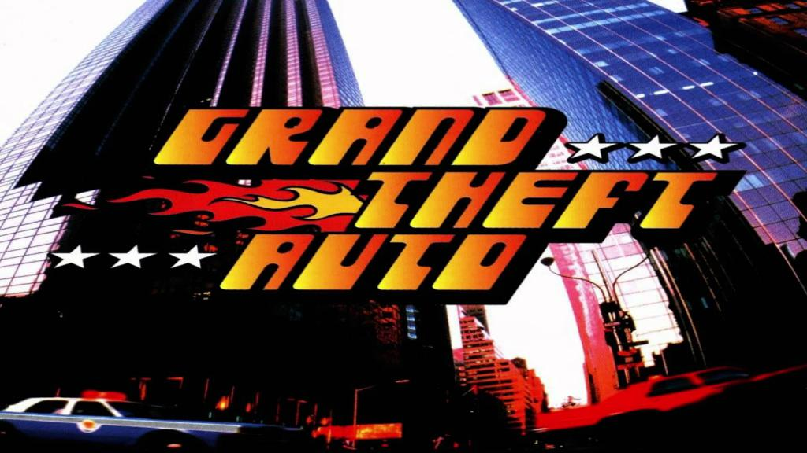Игроков также привлекла возможность того, что можно было не следовать слепо за игрой, а и самому влиять на процесс игры. Хотя тут и не было открытого мира, все же свобода перемещения по карте тогда была в новинку. Поэтому многие геймеры решили забросить задания и просто ездить по дорогам. После выхода первой части разработчики решили продолжить историю - «GTA» пополнилась парой новых серий. Вышло дополнение London 1969, которое позволяло окунуться во время шестидесятых. А позже появилось DLC London 1961. Отличалось оно от предыдущей части только тем, что открывало новые миссии и район.
История создания «ГТА» продолжилась в 1999 году, когда вышла вторая основная часть. Чуть позже ее перевели на русский язык, и она получила название «ГТА 2: Беспредел». Новинка была выпущена на трехмерном движке, но при этом все равно имела вид сверху. Благодаря игрокам, которые оставляли отзывы о первой части, разработчики попытались сделать все, что от них хотели. Во второй части герой получил имя. Клод стал протагонистом серии. Он сражается за авторитет банд в трех районах. Игроки отметили, что история новой части оказалась интересной. Поработали разработчики и над ИИ. Поменялась механика геймплея, появилась масса новых возможностей для геймера.
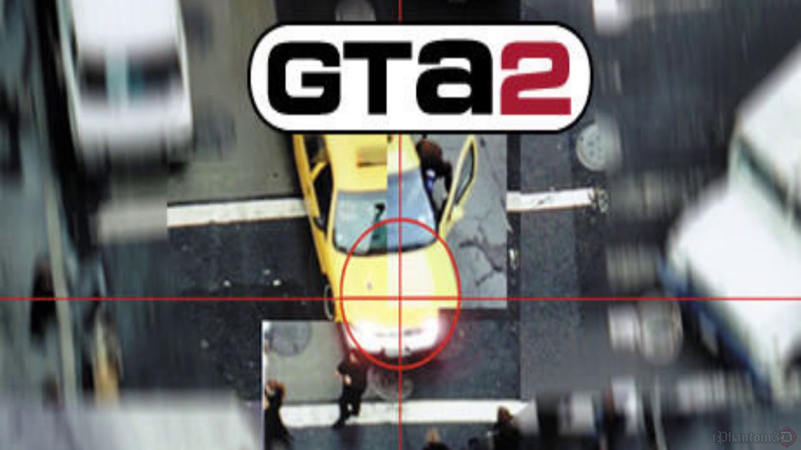Grand Theft Auto III вышла в 2002 году. Она стала главным прорывом серии. Особенностью проекта стала трехмерная графика и вид от третьего лица. Несмотря на то что ранее уже были представлены трехмерные игры с открытым миром, игроки знали, что Rockstar не предаст свой стиль и будет продолжать продвигать гангстерскую тему.
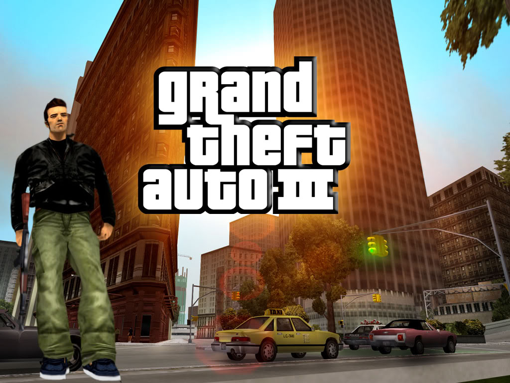Сейчас однозначно можно говорить о том, что проект оказался культовым, пусть и давно устарел и мало кому сейчас покажется интересным. Благодаря своему новому движку игра смогла привлечь к себе внимание новичков. Поэтому фанатская база заметно пополнилась. История «ГТА 3» и ее персонажей заинтересовала миллионы геймеров, которые помогли ей побить рекорды продаж предыдущих частей. Тут же стали появляться десятки новых игр, которые пытались повторить успех Grand Theft Auto. И пусть некоторые из них стали более или менее популярны, стать круче культовой серии у них не получилось. За первый год третья серия получила массу наград и почти самые высокие баллы от авторитетных игровых изданий. Но даже не это сделало ее самой популярной. Новая игра привлекла внимание общественности к себе, и оказалось, что не все готовы мириться с тем,что подростки знакомятся с излишней жестокостью.Конечно, в этом смысле такие споры были оправданы, поскольку геймплей и вправду вынуждал геймера убивать полицейских и мирных ради наживы и авторитета в бандах. Некоторые были возмущены тем, что в игре можно снять проститутку, которая присоединится к протагонисту. Некоторые события, которые происходили в США, начали связывать с пагубным влияние проекта на умы молодежи. В итоге об игре заговорили даже политики. Но поскольку черный пиар - тоже пиар, количество игроков увеличивалось в геометрической прогрессии. Все скандалы сыграли на руку Rockstar - компания получила столько денег, что могла думать о следующих разработках.
Новый проект не заставил себя ждать. Теперь игроки смогли познакомиться с историей «ГТА: Вайс Сити». В 2003 году вышла новая часть, которую перевели на русский язык лишь в 2009 году. До этого фанатам приходилось довольствоваться кастомной локализацией. Игрок переносится в Майами 1986 года. Естественно, о том, что это Майами, мы можем только догадываться, поскольку в виртуальном мире этот город получил название Вайс-Сити. Вокруг пальмы, пляжи, полуголые девушки и крутые тачки.Главным героем этой истории стал Томми Версетти. Многие игроки считают, что данный проект появился благодаря фильму «Лицо со шрамом», поскольку в нем слишком много отсылок к этой киноленте.
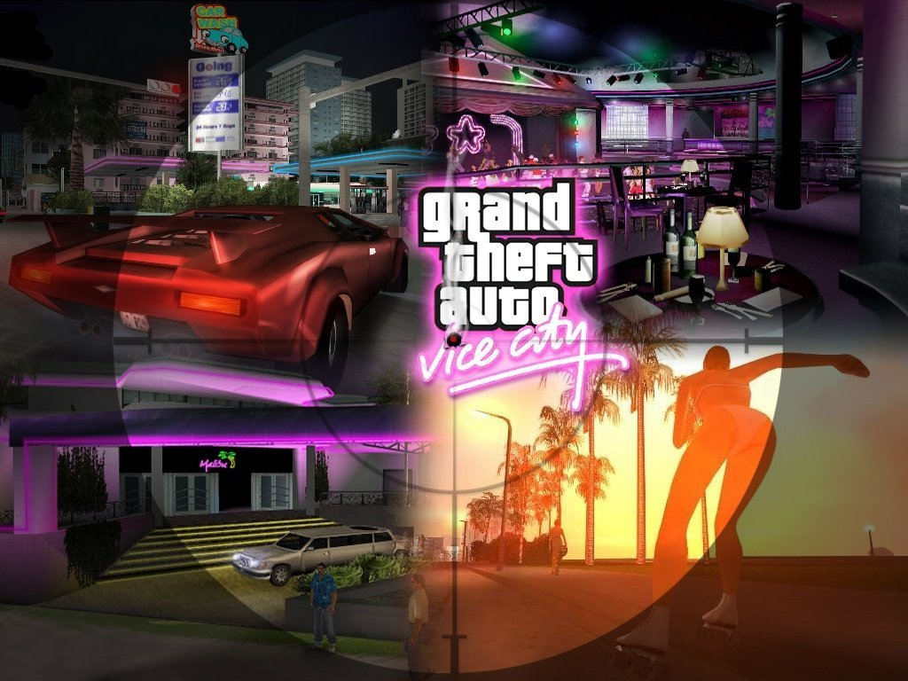Графика или механика игры практически не изменилась. Разработчики сделали акцент на расширении возможностей протагониста, а также на новой истории. Кстати, теперь в «ГТА» стала возможна покупка недвижимости.
В то время мало кто из геймеров мог представить, что можно сделать что-то лучше, поскольку третья серия оказалась и вправду удачной. Но история «ГТА: Сан-Андреас» доказала обратное. В 2005 году выходит эта игра и моментально захватывает еще большую аудиторию. На русский проект перевели в 2010 году. В этот раз снова не обошлось без скандала. Оказалось, что в ресурсах игры можно было обнаружить вырезанные эротические мини-игры. Но вырезаны они были настолько плохо, что хакеры из народа легко восстановили их, чтобы отправиться на виртуальное свидание. После встречи дама предлагала протагонисту «зайти на кофе», после чего эпизод получил название Hot Coffee. Если не использовать модификацию, то игрок видит только дом со стороны, шатающуюся камеру и характерные звуки. А вот при взломе этого эпизода можно попасть внутрь дома, где геймер видит голую девушку. Суть мини-игры - быстро кликать на клавишу, чтобы удовлетворить свою девушку.Когда обнаружилась эта пикантная история в «ГТА: СА», игра серия сразу же получила возрастное ограничение 18+, а часть магазинов отправила игру в раздел с порнографией. Некоторые продавцы и вовсе убрали со своих полок диски.
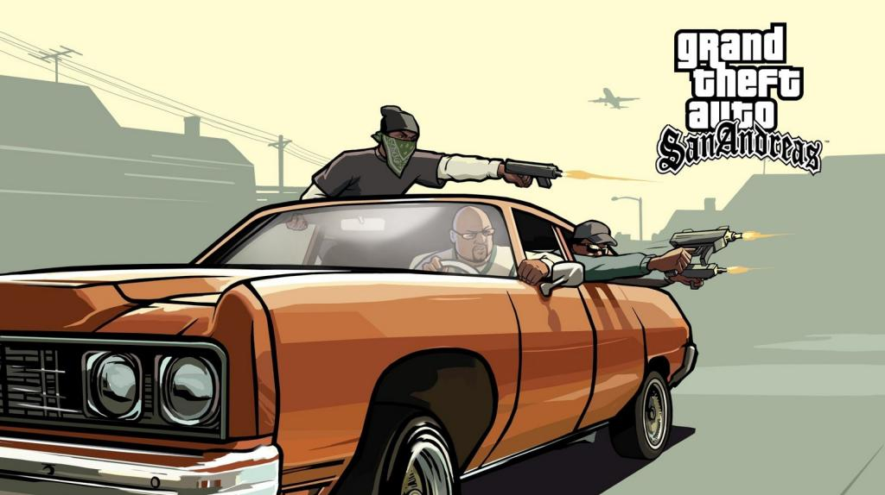Новый скандал снова повлиял на историю «ГТА: Сан-Андреас». В 2006 году против проекта выступил прокурор Джек Томпсон. Он снова и снова пытался доказать общественности, что игра провоцирует насилие в реальности. Он считал, что многие, «заигравшись в гангстера», выйдут на улицу и начнут копировать виртуального протагониста. В то время, как, впрочем, и сейчас, в США были частыми случаи убийств и неоправданной агрессии со стороны подростков и взрослых людей. Многие связывали это с компьютерными играми. Томпсон требовал запретить продажу Grand Theft Auto. Но скандал бушевал недолго. В 2008 году Томпсон лишился адвокатской лицензии за то, что всячески пытался подставить Rockstar, оскорблял разработчиков и даже нагрубил судье за то, что тот отказал ему в иске. Как скандал повлиял на проект? Хотя разработчики потратили много денег на суд, он же стал их главной рекламной кампанией. Игра заинтересовала всех, кто слышал историю Томпсона. Многие покупали серию лишь для того, чтобы увидеть своими глазами «жестокость и насилие», против которых боролся адвокат. В итоге к 2011 году было продано почти 28 миллионов копий.
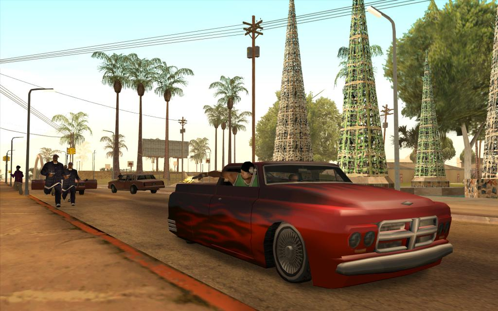История «ГТА: СанАндрес» переносит геймера в 1992 год, в вымышленный штат. О Сан-Андреасе игрок мог слышать в первой части. Тогда эта локация была основана на реальном Сан-Франциско. В новой серии дела обстоят несколько иначе. Дело в том, что события в игре происходят в Лос-Сантосе, Сан-Фиерро и Лас-Вентурасе. В итоге виртуальная локация стала в пять раз больше, чем в предыдущей части.Лос-Сантос - это Лос-Анджелес. Разработчикам удалось реализовать много отсылок к реальному месту. Вместо знаменитого «Голливуд», на холме надпись «Вайнвуд», за которой находится район богачей. Есть в городе неблагополучное гетто. в Лос-Сантосе много банд, которые хотят получить власть над этим местом и его жителями. Сан-Фиерро - это Сан-Франциско. Особенность этой местности - холмы. Многие игроки попробовали экстремальную езду по холмам на автомобиле. В городе есть трамваи, которые нельзя взорвать или остановить. Место оказалось культовым благодаря собранию автомобилей и круглосуточным гонкам. Лас-Вентурас - это Лас-Вегас. Тут, как и в реальности, есть огромная улица, на которой повсюду находятся казино и отели. Протагонист здесь может играть в азартные игры и рисковать большими суммами.
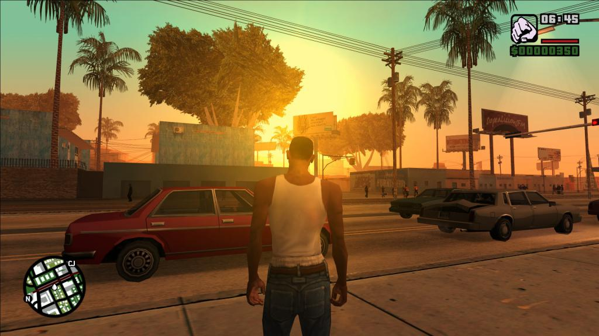История персонажей «ГТА: Сан-Андреас» очень интересная. Разработчики постарались сделать Си-Джея интересным протагонистам, который бы вызвал сразу много эмоций. Настоящее его имя - Карл Джонсон. Он родился в гетто Лос-Сантоса и там же вырос. История его начинается с того, что он прибывает в Либерти-Сити, чтобы похоронить мать. Но его арестовывают продажные копы, которые пытаются подставить героя. Отделавшись от полицейских, Си-Джей попадает на похороны, где встречается с братом и сестрой, а также парой знакомых. Ему рассказывают о скверных делах местной банды, и протагонист решает помочь. Конечно, сюжет не самый крутой. История Клода кажется намного интереснее. Но разработчикам удалось сделать уникальных персонажей. Каждый получил свой характер и легко может как влюбить в себя, так и оттолкнуть геймера. Игрок встречает на своем пути старика хиппи, который ведет себя странно, живет с паранойей, но знает очень много того, что происходит внутри банд. Интересным получился босс китайской триады, полностью реализующий свой образ. Отличными получились реперы, крупье и многие другие.
«ГТА: Истории Либерти Сити» - консольный проект, который был выпущен в 2005 году. Уже через год эту часть признали самой продаваемой. Сначала в нее можно было поиграть на PSP, а потом и все последующие поколения PlayStation стали ее поддерживать. В 2015-2016 годах эта часть стала доступна для смартфонов.
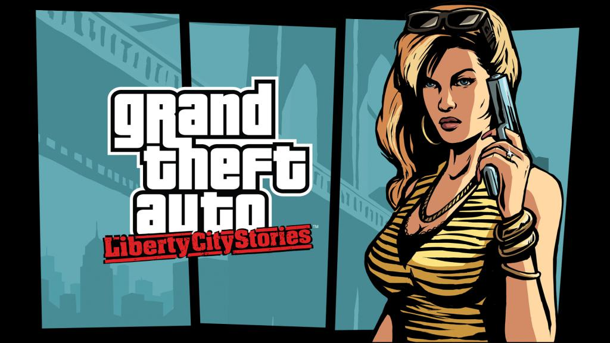Практически никаких кардинальных изменений с новинкой не произошло. В новой части протагонистом стал Тони Сиприани, который в одной из частей давал задания Клоду. Все миссии игрок может получать от авторитетов и других персонажей. В новой истории «ГТА» появляются персонажи, которые уже ранее были известны поклонникам проекта. Не трудно догадаться, что игра переносит геймера в Либерти-Сити. Этот город на то время уже был известен по предыдущим частям. События начинаются в 1998 году. Локация немного видоизменена и отличается от той, которая представлена в третьей части.«ГТА: Истории Вай Сити» - видеоигра, которая вышла в 2006 году. Разработчики не тронули ни механику, ни геймплей. Единственное, над чем решено было поработать - над новым сюжетом. Геймер переносится в 1984 год. История повествует о капрале Викторе Вэнсе. Мужчина должен переехать в Вайс Сити, чтобы служить на другой базе. Но там он встречает сержанта, который тесно связан с криминалом. Пару незаконных услуг, и Виктор лишается своей работы. Ему остается отправиться к знакомому Филу Кэссиди. В «ГТА: Истории Вай Сити» игроку придется снова ввязаться в бандитский бизнес. Помимо этого, для полного прохождения снова придется получить нужный уровень полицейского, пожарника, фельдшера и такси. Но эти задания стали более разнообразны. Теперь можно будет полетать на медицинской вертолете, тушит пожар с вохдуха и патрулировать пляж. Можно использовать читы на «ГТА: Истории Вай Сити», чтобы быстрее справляться с миссиями. К примеру, если установить соответствующий пак кодов, можно открыть определенный процент мультиплеерного контента. Также можно перекрасить все машины в игре в черный цвет, получить броню и необходимое оружие. Есть также коды на ясную погоду, взрыв всех машин, быстрое время и геймплей, определенную сумму денег и т.д. С читами на любую часть GTA можно заметно упростить себе прохождение игры.
В 2008 году появляется игра «ГТА 4». Проект стал действительно неплохим, поскольку разработчики переработали графику. Но новшества помешали многим игрокам насладиться проектом, поскольку появились высокие требования к железу. И если раньше каждая новая серия заметно отставала по технологии от других проектов, а брала лишь масштабами и самой идеей, то такие нововведения оказали значительное влияние на продажи и популярность.
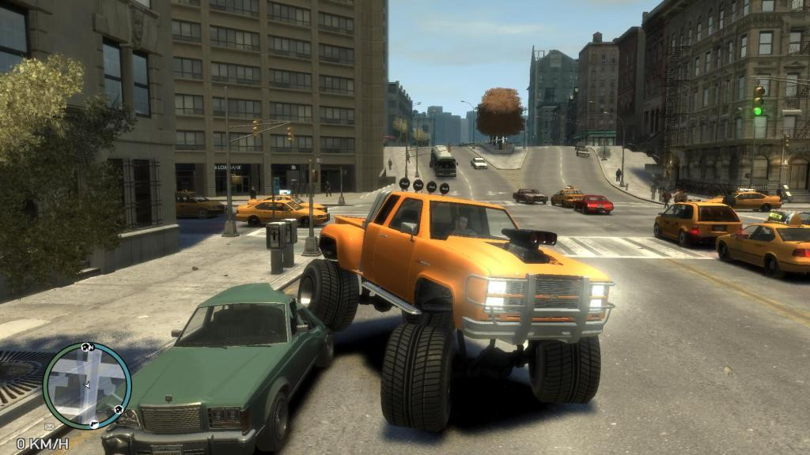Геймер снова оказывается в Либерти-Сити. Но это уже не та локация, которая встречалась раньше. Да и новая история совсем не пересекается с теми, что были раньше. В этот раз разработчики постарались сделать из Либерти-Сити точную копию Нью-Йорка, при этом исковеркав названия ключевых локаций. В новой части «ГТА» страшные истории теперь происходят с Нико Белликом. Протагонист родом из восточной Европы. Он прибыл в США, чтобы начать новую жизнь. Авторы игры сделали его бывшим военным, который не смог найти работу у себя на родине, поэтому промышлял там контрабандой. Из-за инцидента Нико пришлось покинуть страну, чтобы избежать расправы со стороны своего босса. После этой части было еще парочку для консолей и ПК, которые мало чем запомнились. Но настоящим прорывом стал выход пятой серии.
Самые страшные истории в «ГТА» начались в пятой части. Игра вышла в 2013 году для консолей, в 2014 году - для новых консолей и в 2015 году - для ПК. Игрок переносится в Сан-Андреас. Теперь прохождение доступно сразу за троих людей. Каждый из них готов на самые ужасные вещи. Они грабят, убивают и устраивают беспредел. Мир в новой части оказался огромным, поэтому неудивительно, что многим для прохождения понадобились коды. История «ГТА 5» оказалась интересной всем. Игроки были рады, что в любой момент могут переключиться с одного персонажа, на другого. Пейзажи в округе стали идеей для сотни обоев для рабочего стола. Виртуальный мир оказался очень масштабным. Его можно было преодолевать на любом виде транспорта. Многие были рады управлять военным вертолетом и давить машины на танке. Пятая часть оказалась очень дорогой. Разработчики вложили много денег как в саму игру, так и в ее продвижение. В итоге она стала самой популярной в серии. К 2018 году продажи копий игры перевалили за 95 миллионов. Впереди - только Tetris и Minecraft.
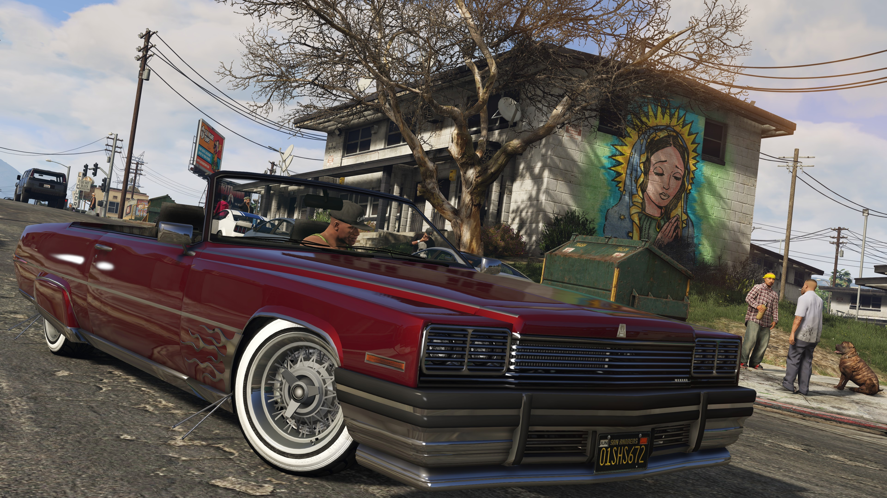Из-за такой популярности для GTA V было придумано огромное количество модов. Они не влияли на геймплей или сюжетную историю. К примеру, можно было установить мод «История игрушек». В «ГТА 5» главные герои превращались в персонажей этого мультфильма. Модификация выглядит забавно, но несмотря на это, все равно не подходит для детей, поскольку суть игры не меняется. Просто мульт-персонажи начинают бегать с оружием и точно также убивать и грабить всех вокруг.
Среди людей, которые интересуются компьютерными играми, точно не осталось тех, кто не слышал о серии Grand Theft Auto. Многие прошли хотя бы 5 основных частей проекта. Есть и те, кто знает практически все серии, не учитывая консольные варианты. Разработчикам удалось создать собственный стиль, который запомнился всем. Несмотря на многочисленные скандалы, проект остается на плаву. Он не кажется многим игрокам таким уж опасным, как о нем говорят некоторые активисты. Да и многочисленные награды говорят совсем об обратном.
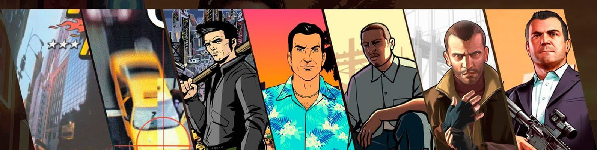 Вернуться в STALKER